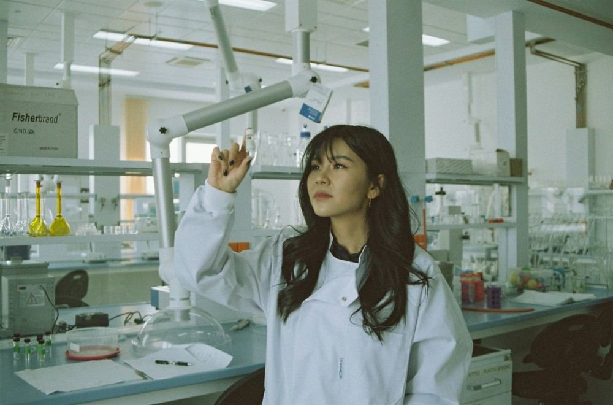
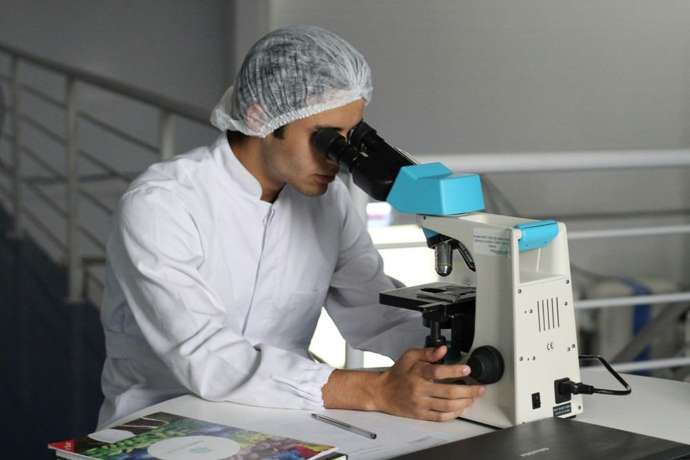
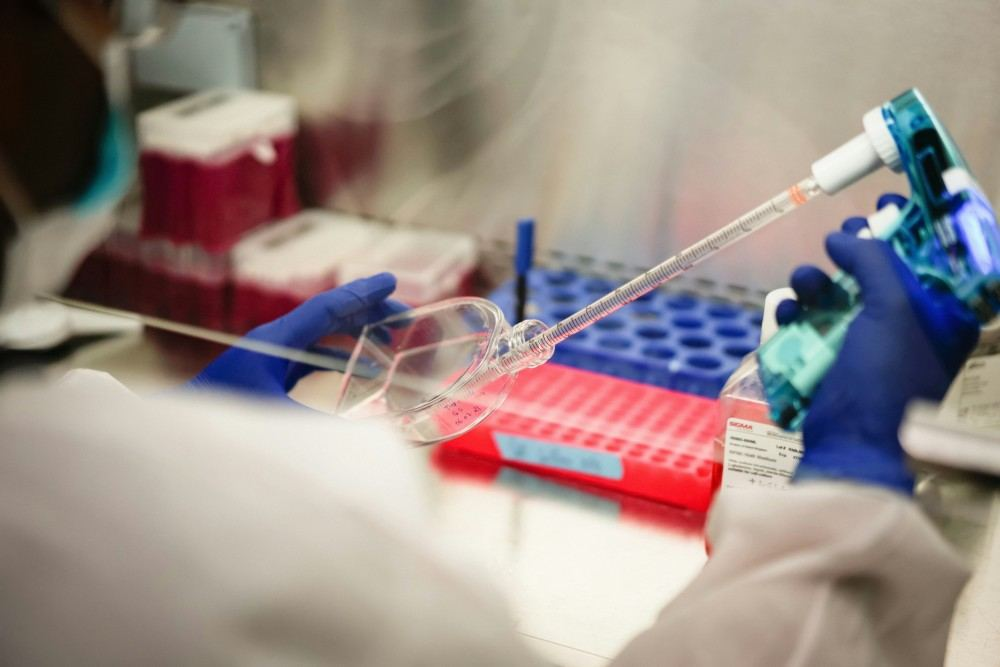
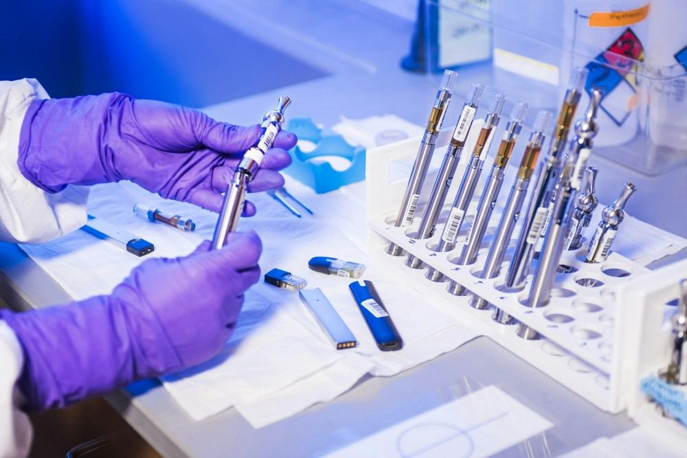

Réf. AFGSU-2Biologie médicalePrésentiel
Formation AFGSU 2 pour technicien de laboratoire
Au poste de prélèvement, un patient sur le fauteuil peut basculer en quelques secondes : malaise vagal, réaction allergique, chute en se levant. Cette formation de 21 heures transforme ces scénarios en procédures que vous maîtrisez, aiguille en main.
L'AFGSU 2 en bref
- Le texte de référence de l'AFGSU 2 (gestes et soins d'urgence, niveau 2) est l'arrêté du 30 décembre 2014, révisé par l'arrêté du 1er juillet 2019.
- Le technicien de laboratoire médical, profession de la 4e partie du Code de la santé publique, fait partie du public visé.
- Formation de 21 heures sur 3 jours, en groupe de 6 à 12, au prix de 385 € TTC.
- Le CESU délivre l'attestation, qui reste valable 4 ans avant réactualisation.
- Situations travaillées : malaise vagal, choc anaphylactique, accident d'exposition au sang, chute en salle d'attente.

Pourquoi l'AFGSU 2 est indispensable au laboratoire
L'arrêté du 30 décembre 2014, modifié par l'arrêté du 1er juillet 2019, réserve l'AFGSU 2 aux professionnels de santé de la 4e partie du Code de la santé publique, dont les techniciens de laboratoire médical. Le laboratoire de biologie est un lieu de soin à part entière : on y pique, on y fait patienter des personnes à jeun, âgées, anxieuses ou polymédiquées.
| Situation | Où | Premier réflexe travaillé |
|---|---|---|
| Malaise vagal | Fauteuil de prélèvement | Retirer l'aiguille, allonger, jambes surélevées |
| Choc anaphylactique | Box, après contact latex ou antiseptique | Alerter le 15, position adaptée, adrénaline |
| Accident d'exposition au sang | Paillasse, poste de prélèvement | Lavage, antisepsie, consultation dans l'heure |
| Chute | Salle d'attente, au lever | Bilan avant tout relevage |
| Hypoglycémie | Patient diabétique à jeun | Resucrage si conscient, PLS sinon |
Programme détaillé
Module 1 · Urgences vitales 10 h 30
- Alerte 15, 112, 114
- Arrêt cardiaque
- RCP adulte, enfant, nourrisson
- Défibrillateur (DAE)
- Obstruction des voies aériennes
- Hémorragies
- Inconscience, PLS
Cas pratique : en fin de prélèvement, le patient ne répond plus et respire mal. Vous déclenchez l'alerte, le basculez au sol et commencez la RCP avec le défibrillateur du laboratoire.
Module 2 · Urgences potentielles 7 h
- Malaise
- Traumatismes
- Brûlures
- Accouchement inopiné
- Relevage, brancardage
- Hygiène et AES
- Chariot d'urgence
Cas pratique : une patiente se plaint de démangeaisons puis de gêne respiratoire après la pose du garrot. Vous identifiez l'anaphylaxie et organisez l'alerte.
Module 3 · Risques collectifs et SSE 3 h 30
- Plan blanc
- ORSAN
- NRBC-E
- Damage control
- Attentats
Cas pratique : votre laboratoire est sollicité dans le cadre d'une situation sanitaire exceptionnelle. Vous situez votre rôle et les règles de protection face à un risque biologique.

Tarif et contenu inclus
Prix : ancien tarif 450 € 385 € TTC
- 21 heures sur 3 jours en présentiel
- Mannequins adulte, enfant, nourrisson
- Défibrillateurs de formation, matériel d'urgence
- Kit AES et matériel d'hygiène pour les exercices
- Attestation AFGSU 2 délivrée par le CESU

Lieux de session, partout en France
Formations interlaboratoires dans les grandes villes, ou sur site pour votre équipe.
Dans votre laboratoire : nous intervenons sur votre plateau technique ou dans l'un de vos sites de prélèvement.
Déroulé des 3 jours
| Jour | Matin | Après-midi |
|---|---|---|
| Jour 1 | Alerte, inconscience, PLS, obstruction des voies aériennes | Hémorragies, malaise vagal au fauteuil, hypoglycémie |
| Jour 2 | RCP adulte, enfant, nourrisson, défibrillateur | Anaphylaxie, traumatismes, chute, relevage et brancardage |
| Jour 3 | Hygiène, AES, brûlures, accouchement inopiné | Risques collectifs, NRBC-E, synthèse et évaluation |
Encadrement et matériel
| Formateurs | Soignants de l'urgence, habilités à former à l'AFGSU |
|---|---|
| Effectif | 6 à 12 stagiaires, chacun pratique chaque geste |
| Matériel | Mannequins, DAE de formation, matériel d'urgence professionnel |
| Attestation | Délivrée par le CESU |

FAQ des techniciens de laboratoire
Un technicien de laboratoire est-il concerné par l'AFGSU 2 ?
Oui, le technicien de laboratoire médical fait partie des professions de santé inscrites dans la 4e partie du Code de la santé publique, public visé par l'AFGSU 2. Au laboratoire, vous êtes en contact direct avec les patients, souvent à jeun, parfois anxieux ou fragiles. L'attestation vous prépare à réagir avant l'arrivée des secours, au box comme en salle d'attente.
L'AFGSU 2 est-elle exigée pour réaliser des prélèvements sanguins ?
De nombreux laboratoires l'exigent de leurs préleveurs, et elle accompagne souvent le certificat de capacité de prélèvements sanguins. Les exigences précises dépendent de votre situation et des textes applicables à votre structure. Renseignez-vous auprès de votre biologiste responsable ; dans tous les cas, l'attestation reste la preuve que vous savez gérer un incident pendant un prélèvement.
Que faire si un patient fait un malaise vagal pendant une prise de sang ?
Retirez l'aiguille, comprimez le point de ponction et allongez le patient en surélevant ses jambes. Desserrez ce qui le gêne, parlez-lui et surveillez sa conscience et sa respiration. La plupart des malaises vagaux cèdent en quelques minutes. S'il ne reprend pas connaissance, ne respire pas normalement ou présente une douleur thoracique, appelez le 15.
Comment reconnaître un choc anaphylactique au laboratoire ?
Suspectez une anaphylaxie devant l'apparition brutale de signes cutanés, comme une urticaire ou un gonflement du visage, associés à une gêne respiratoire, une chute de tension ou des troubles digestifs. Au laboratoire, le latex ou un antiseptique peuvent être en cause. Appelez le 15 sans attendre, allongez le patient et préparez l'adrénaline si elle est disponible.
Je me suis piqué avec une aiguille souillée : quelle conduite tenir ?
Ne faites pas saigner la plaie : lavez-la immédiatement à l'eau et au savon, rincez, puis trempez-la dans un antiseptique au moins cinq minutes. Prévenez votre responsable et consultez sans délai le référent AES ou les urgences, idéalement dans l'heure, pour évaluer le risque. Déclarez l'accident du travail. Le module 2 entraîne précisément à cette séquence.
Un patient chute en salle d'attente : que faire ?
Ne le relevez pas tout de suite. Vérifiez d'abord sa conscience et sa respiration, demandez-lui où il a mal et repérez une plaie, une déformation ou un saignement. S'il a perdu connaissance, se plaint de la tête ou ne peut pas bouger un membre, appelez le 15. La formation vous apprend aussi les techniques de relevage sans risque.
Un patient à jeun se sent mal en attendant : est-ce une hypoglycémie ?
C'est possible, surtout chez une personne diabétique venue à jeun. Sueurs, tremblements, pâleur, confusion ou comportement inhabituel doivent alerter. Si le patient est conscient et peut avaler, donnez-lui du sucre puis une collation une fois le prélèvement fait. S'il est somnolent ou inconscient, ne lui donnez rien par la bouche, mettez-le en PLS et appelez le 15.
Je réalise des prélèvements à domicile : la formation couvre-t-elle ces situations ?
Oui, les mises en situation intègrent l'intervention seul, loin de l'équipe du laboratoire. Vous apprenez à donner l'alerte avec précision, à guider l'entourage, à utiliser un défibrillateur public et à surveiller le patient jusqu'à l'arrivée des secours. Seul avec un patient au domicile, chaque minute compte ; le bilan transmis au 15 aussi.
Le laboratoire doit-il disposer d'un défibrillateur ?
Cela dépend de la catégorie d'établissement recevant du public du laboratoire : de nombreux ERP sont désormais tenus de s'équiper d'un défibrillateur automatisé externe. Votre direction connaît l'obligation qui s'applique. Quel que soit le cas, savoir s'en servir est un acquis central de la formation : chaque stagiaire pose les électrodes et suit les instructions plusieurs fois.
Quelle est la durée de la formation et son prix ?
La formation dure 21 heures, réparties sur 3 jours en présentiel. Elle coûte 385 € TTC au lieu de 450 €. Ce tarif inclut l'enseignement, l'usage des mannequins adulte, enfant et nourrisson, des défibrillateurs de formation et du matériel d'urgence, ainsi que l'attestation délivrée par le CESU à l'issue de la formation.
Qui délivre l'attestation et quelle est sa durée de validité ?
L'attestation AFGSU de niveau 2 est délivrée par le CESU (Centre d'Enseignement des Soins d'Urgence) aux participants présents pendant toute la formation et dont les gestes ont été validés. Elle est valable 4 ans. Avant l'échéance, une réactualisation est nécessaire pour la conserver ; notez la date dès réception de l'attestation.
Quelle est la différence entre l'AFGSU 1 et l'AFGSU 2 ?
L'AFGSU 1, en 14 heures, s'adresse à tous les personnels, y compris administratifs ou d'accueil. L'AFGSU 2, en 21 heures, est réservée aux professionnels de santé comme les techniciens de laboratoire. Elle ajoute la prise en charge avec matériel, le travail en équipe et les gestes adaptés aux situations de soin. Pour votre poste, c'est le niveau 2 qui convient.
Mon AFGSU 2 a expiré : que dois-je faire ?
Inscrivez-vous à une nouvelle formation complète de 21 heures. Après expiration des 4 ans, il n'est en général plus possible de suivre une simple réactualisation. Précisez dans votre demande la date figurant sur votre ancienne attestation : nous vérifions la formule adaptée et vous proposons la session la plus proche de votre laboratoire.
Pouvez-vous former toute l'équipe de notre laboratoire sur place ?
Oui, la formation peut avoir lieu dans votre laboratoire ou sur l'un de vos sites, pour un groupe de 6 à 12 personnes. Les exercices se font alors dans vos box de prélèvement, avec votre matériel d'urgence et votre procédure d'alerte. C'est aussi l'occasion d'harmoniser les réflexes entre sites. Demandez un devis en précisant l'effectif.
Votre demande de session
Indiquez votre ville et vos disponibilités. Pour une équipe, précisez le nombre de techniciens. Réponse rapide, ou appelez le 07 80 91 23 35.